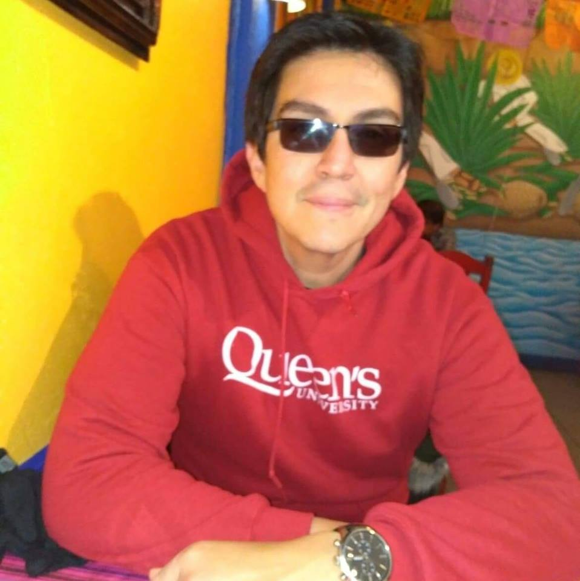

|  | Oscar David Castro ReyesMSc. Computer Science Hello! My name is Oscar. I'm from La Paz, Baja California Sur, Mexico. I did my bachelor's degree in Computer Science in UABCS (Universidad Autonoma de Baja California Sur) back in 2011. Right after I graduated I began to work as a GIS Analyst for the Mexican Government in their Secretariat of Agriculture (SAGARPA). 4 years and a half after that, I decided to pursue a Master's degree. I chose Canada as it has one of the best life quality in the world, and Queen's University because it is among the top ten post-secundary educational institues in Canada. Enrolled in 2016 and graduated in 2018, It took me a while to land a good job. I joined ESG Solution in 2019 as a Technical Support/Field Technician in Kingston, ON, but after 3 Months I got lay off. Currently I'm working for Oracle NetSuite as a Tehcnical Support Analyst and currently building professional experience to apply for a PR in Canada. |
| Date | Work | Location |
|---|---|---|
| 2019 | Technical Support Analyst at Oracle NetSuite | Mississauga, ON. Canada |
| 2019 | Technical Support at ESG Solutions | Kingston, ON. Canada |
| 2012-2016 | GIS Analyst at SAGARPA | La Paz, BCS. Mexico |
I have an interest in pure mathematics, mainly graph theory. I'm currently learning and exploring digital game development using Unity engine.
My hobbies include hikking, playing Destiny 2, boardgames (tales of arabian nights and cosmic encounters are my favorites) and baseball (New York Yankess fan). I also enjoy reading fantasy and sci-fi books, manga and comic books.